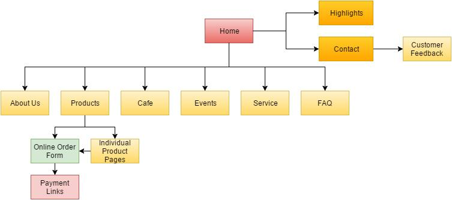

Name: Ramesh Durai & Kenny Anthony Thesman
Login: jc310886 & jc309977
Group: 11
The goal of the website is to support the FRIAS company in it's mission of "providing a complete experience for todays' kids with exciting fashion lifestyle products". To this end, the implementation of a website will be extremely helpful in organising and providing information about the company and our goods and services.
The website will aim to increase coverage and access to the company, more practically seen in an increase in quality over the current website, that should lead to a larger number of leads and purchases from the website itself. The new website should see an increase in visitors as well as online sales made.
The website itself will be a redevelopment of the current website, and as such, the main evaluation will be the increase in leads and visitors.
This can be tracked through the number of unique visitors per month before and after the implementation of the new website, along with the number of these visitors that end up purchasing something as well.
Qualitatively, the website should improve the look and feel of the current website, with the end goal being to increase the awareness and image of the company itself.
The target audience will be primarily toward youth, as the main goal is to sell clothes to them. As such, the structure of the website will be clear and the design must tend toward visual appeal and easy access.
The design will be open and colourful, and links will be made large and clearly titled to allow easier access for kids. As well, group testing will be used with kids to smoothen the process and ensure the capability of the website.
 ...